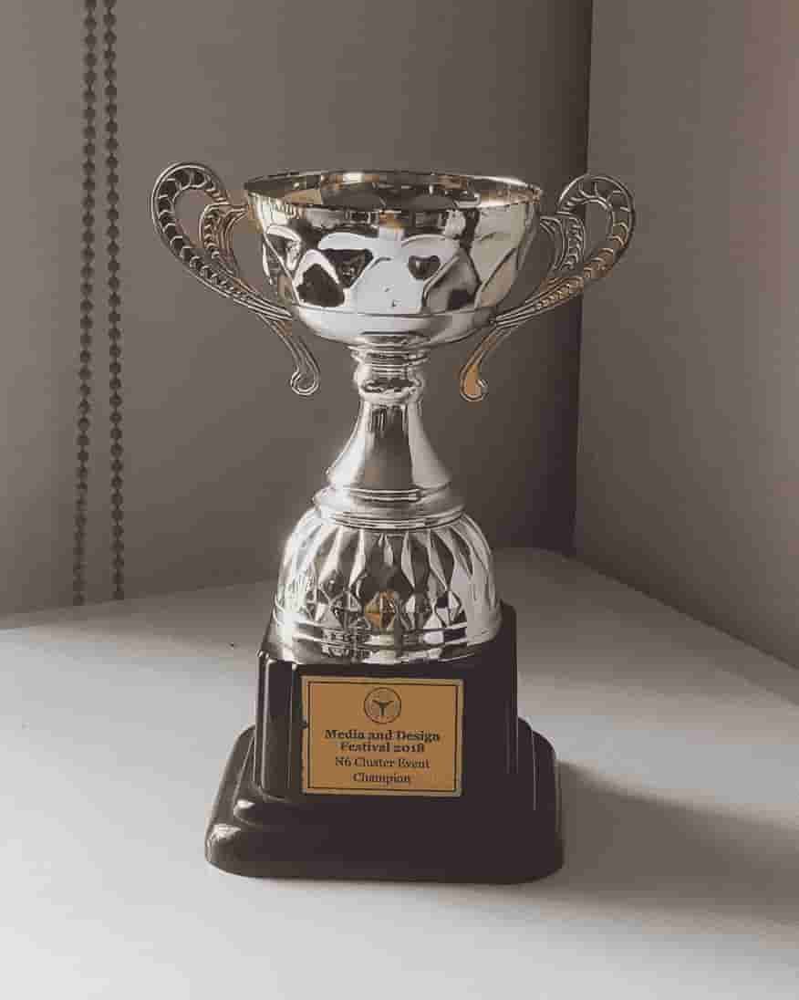
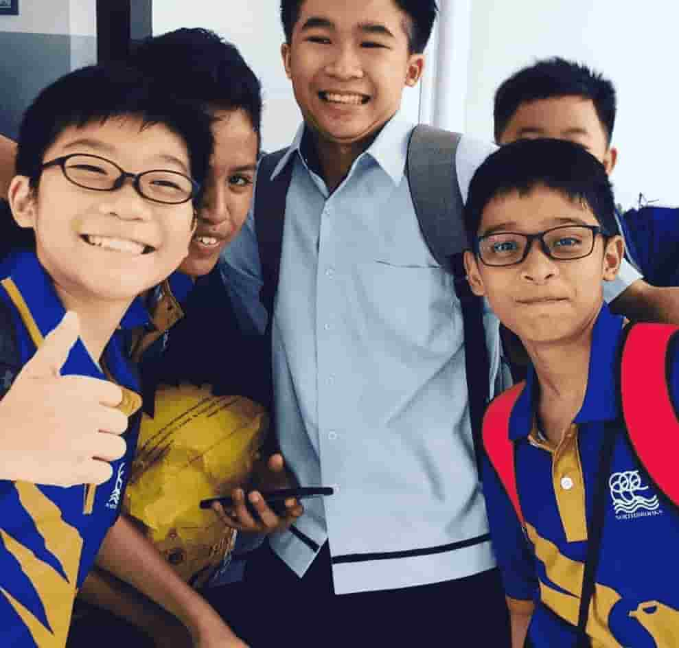
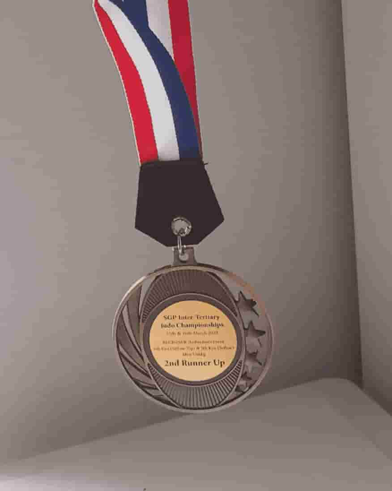
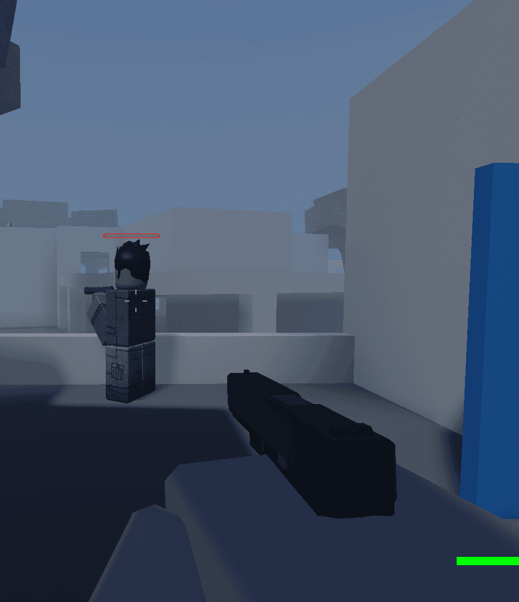
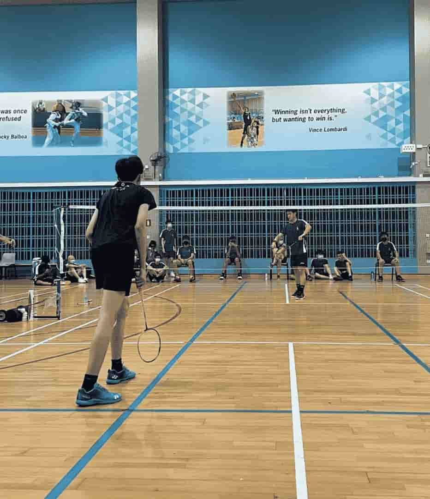
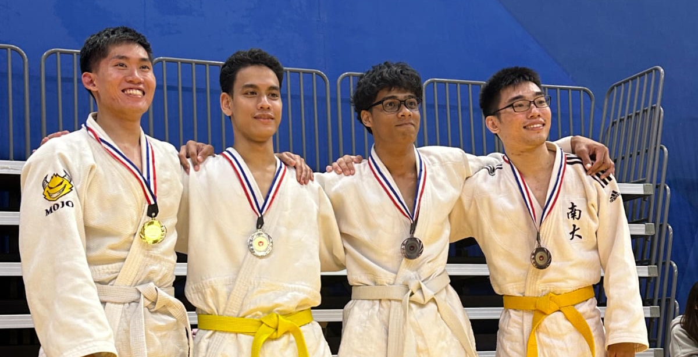

Hi, I'm Nirob Miazee. I graduated with a diploma in
Game Development & Technology at Nanyang Polytechnic.
I have always been fascinated by games since I was nine, which was when I stumbled
across Roblox Studio out of boredom, eventually growing into a
huge interest in creating games.
My passion lies mainly in programming, especially action and stealth-based games.
Games such as Hitman, Ready or Not, Call of Duty, and Assassin's Creed
have all played a part in influencing the types of games I would like to create. While I am still exploring ideas,
my focus always comes back to gameplay and mechanics over storytelling.
Outside of game development, I practice judo in school, while occasionally playing badminton.
When I have free time, I like to experiment with side projects in Roblox Studio, though I tend to move on quickly
once the initial excitement of making the game fades. I am always looking to sharpen my skills and push myself
with new programming challenges.
Core Values
Accountability
I work best when there is a clear
deadline in place or someone to answer to.
In my solo projects, it is easy for me
to lose the initial excitement
without any external pressure,
but when I have responsibilities or
expectations to meet, I find it easier to
stay focused.
Collaboration
I believe that a good team works best
when everyone feels confident in
their role. I try my best to step into
roles where I feel most capable,
but I also try to make sure everyone
else is in the right place too.
Whether that means adjusting
responsibilities or supporting
others, I think collaboration is a good
way to motivate each other and
create something better together.
Experience
I care most about how a game feels,
how immersive or
enjoyable it is. I always ask
myself how things could be better
for the player, and that
focus helps me improve with every
update of a game that I develop.
Education

Huamin Primary School 2014 – 2019
CCA
Drama Club (P1)
Infocomm Club (P2–P6)
Achievements
CCA Leader (2018 – 2019)
AV Crew Leader (2018 – 2019)
Media & Design Festival 2018 Champion

Northbrooks Secondary School 2020 – 2023
CCA
Badminton
Achievements
Badminton B-Div Competitive Team

Nanyang Polytechnic 2024 – 2027
CCA
Judo Club
Achievements
Judo ITC 2025 2nd Runner Up
Class Leader (2025 – 2027)
Judo CCA Executive Commitee (2025 - 2026)
Judo CCA Vice President (2026 – 2027)
Hobbies

Game Development
I've been interested in game development
since I was about 9 years old, when I
came across Roblox Studio while playing
around on Roblox, which quickly turned
into a hobby that I've carried with me
for years. I enjoy experimenting with
game mechanics and seeing how small
changes affect how a game feels to play.
Programming is my favorite part of
development, especially when I can bring
systems and logic to life in a way that
players can interact with.

Badminton
Badminton has been a big part of my
life since secondary school as it was my
CCA. I have always enjoyed the fast-paced
nature of the sport and the mix of
strategy and reflexes it requires. These
days, I still play whenever I get the
chance, mostly for fun or as a way to stay
active and unwind with friends.

Judo
I started practicing judo when I first
entered polytechnic and it quickly became
one of my favorite hobbies. Through regular
training, I've gained strength, confidence,
and a deeper appreciation for technique and
timing. Every session pushes me to improve,
and I've come to enjoy the sense of community
within the club as well.
Featured Hobby: Judo
One of my most memorable experiences in Judo
was competing in the Inter-Tertiary Competition
back in March 2025.
Future Goals
I know that I want to keep
exploring the technical side
of game development, especially in
areas like coding
and AI systems. I am particularly
drawn to FPS and stealth-based
action games, and one of my long-term
hopes is to contribute to a project
with the level of impact
of something like Call of Duty.
Right now, I am focused on building
my skills, working on personal
projects, and learning what makes
gameplay feel responsive, smart,
and immersive. Whether I eventually
join a game studio or work with a
small team of developers,
I am excited to keep growing through
collaboration and problem-solving.
The goal
is not just to finish games, but to
keep getting better with each one.